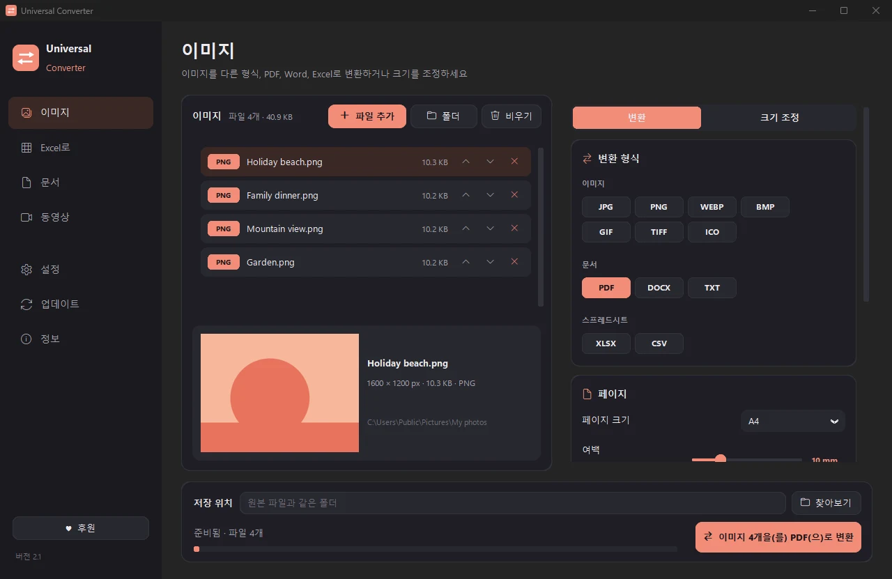
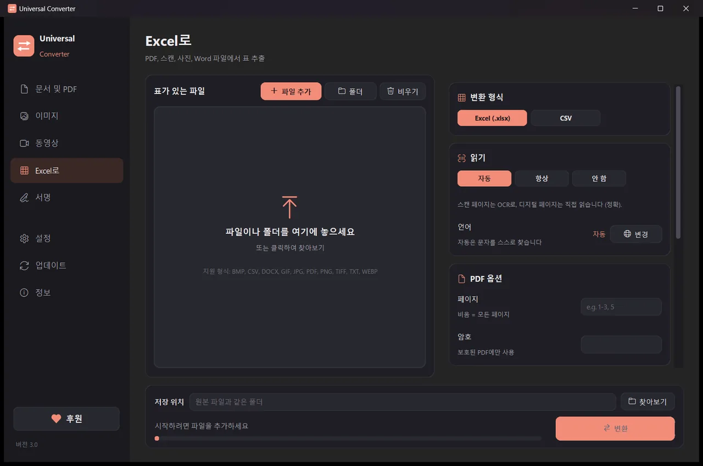
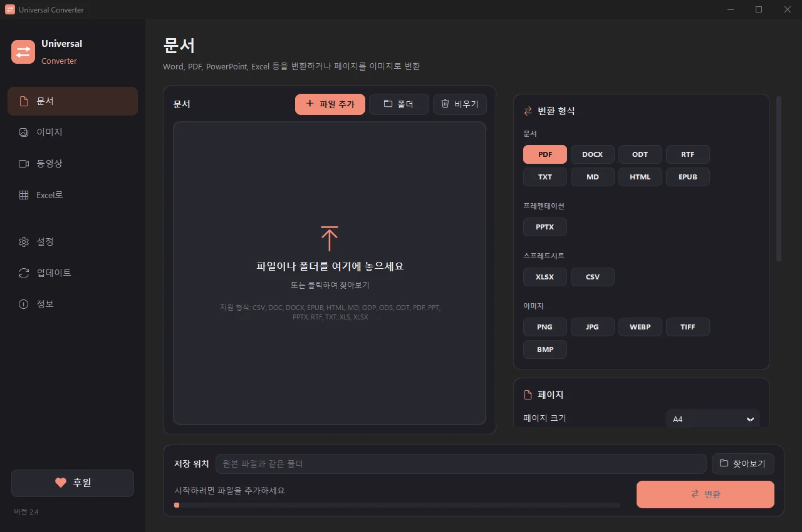
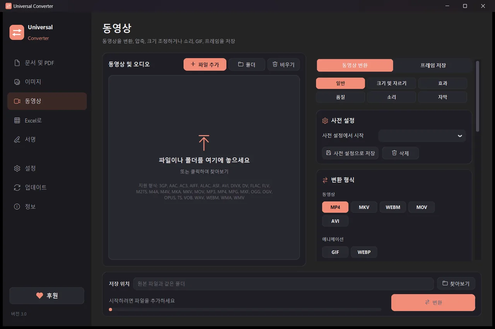

내 기기에서 파일을 변환하세요
이미지, 문서, 동영상과 오디오, PDF, 표를 Excel로, 모두 하나의 앱에서. 아무것도 업로드하지 않습니다. 파일은 기기 밖으로 나가지 않습니다.
설치 및 업데이트 방법
- 다운로드한 .dmg를 열고 Universal Converter를 응용 프로그램으로 드래그하세요.
- 앱을 여세요. 처음에는 Apple 서명이 없어서 macOS가 차단합니다. 완료를 클릭하세요.
- 시스템 설정 > 개인정보 보호 및 보안을 열고 아래로 스크롤한 뒤 '그래도 열기'를 클릭하고 암호를 입력하세요. 한 번만 하면 됩니다.
업데이트: 앱을 처음 열 때 허용하면, 시작할 때마다 새 버전을 확인하고 디지털 서명을 검증한 뒤 원하는 때에 설치합니다.
설치 및 업데이트 방법
- 휴대폰에서 'Android용 다운로드'를 누르세요.
- 다운로드한 파일을 여세요. Android가 요청하면 브라우저나 파일 관리자에 앱 설치를 허용하세요.
- 설치를 누르세요.
업데이트: 앱이 하루에 한 번 정도 확인하고 새 버전이 나오면 알려 줍니다. 같은 방법으로 다운로드해 기존 앱 위에 설치하면 설정이 그대로 유지됩니다.

안전한 개인 정보
모든 작업이 내 기기에서 이루어집니다. 업로드도, 대기열도, 크기 제한도 없습니다.
무료
무료로 사용하며 광고, 계정, 워터마크가 없습니다.
10개 언어
한국어, 영어, 그리스어, 스페인어, 이탈리아어, 독일어, 프랑스어, 포르투갈어, 중국어, 일본어.
하나의 창에 네 가지 도구
이미지
JPG, PNG, WEBP, TIFF, BMP, GIF, ICO 사이에서 변환합니다. 픽셀, 퍼센트, 파일 크기로 크기를 조정하고, 사진을 PDF나 Word 파일로 합치고, 그림 속 글자를 읽습니다(OCR).

Excel로
PDF, 스캔, 사진 속 표를 Excel이나 CSV로 가져옵니다. 은행 거래 내역, 청구서, 가격표 등. 한국어, 영어, 그리스어 등 30개 이상의 언어를 읽습니다.

문서
PDF, Word, ODT, RTF, TXT, Markdown, HTML, EPUB, PowerPoint, Excel 사이에서 변환합니다. 페이지를 이미지로 바꾸고 여러 파일을 하나의 PDF로 합칩니다. 글꼴, 크기, 색상이 그대로 유지됩니다.

동영상
AV1, H.265, H.264, VP9로 동영상을 MP4, MKV, WebM, MOV, AVI로 변환하고 압축합니다. 자르기, 영역 자르기, 회전, 크기 조정, GIF 만들기, 프레임을 이미지로 저장, 소리만 MP3, M4A, FLAC, WAV, OGG, Opus로 저장할 수 있습니다. Android: H.264 또는 H.265의 MP4나 MKV, 자르기, 영역 자르기, 회전, 프레임 저장, 소리만 M4A로 저장.
- 가능하면 동영상에 그래픽 카드를 사용합니다. 보통 5~20배 빠릅니다.
- 폴더째 끌어다 놓으면 모든 파일을 한 번에 변환합니다.
- 새 버전을 알려 주며, Windows와 Mac에서는 디지털로 검증한 뒤 설치까지 해 줍니다.
- 기기에 맞춘 밝은 테마와 어두운 테마.
사용 방법
- Universal Converter를 열고 왼쪽에서 이미지 · Excel로 · 문서 · 동영상을(를) 선택하세요.
- 파일이나 폴더를 창으로 끌어다 놓거나 '파일 추가'를 누르세요.
- '변환'을(를) 누르세요. 새 파일은 원본 옆이나 선택한 폴더에 저장됩니다.
할 수 있는 일
- 업로드 없이 동영상 압축하기
- MP4, MKV, WebM, MOV, AVI 사이에서 동영상 변환
- 동영상의 소리를 MP3로 저장
- 동영상으로 GIF 만들기
- PDF의 표를 Excel로 가져오기
- 사진을 하나의 PDF로 합치기
- PDF를 Word로 변환
- 여러 파일을 하나의 PDF로 합치기
- 이미지 속 글자 복사하기 (OCR)
- JPG, PNG, WEBP 등 사이에서 이미지 변환
- 이미지 크기 조정 또는 파일 크기로 줄이기
- PDF 은행 거래내역서를 Excel로 변환
- PDF 청구서의 표를 Excel로 추출
- 스캔한 문서를 편집 가능한 Word 파일로 변환
- PDF 페이지를 JPG 이미지로 변환
- Word 문서를 PDF로 변환
자주 묻는 질문
정말 무료인가요?
네. Universal Converter는 광고, 계정, 사용 기간 제한 없이 무료로 사용할 수 있습니다. 도움이 되었다면 자발적인 후원으로 개발을 응원할 수 있지만, 꼭 하실 필요는 없습니다.
내 파일이 어딘가에 업로드되나요?
아니요. 모든 변환은 내 기기에서 이루어지므로 인터넷 연결 없이도 작동합니다. 앱은 업데이트 확인, 선택한 추가 언어 다운로드, 그리고 허용한 경우 익명 오류 보고 전송에만 인터넷을 사용합니다.
Windows에서 SmartScreen 경고가 나옵니다. 괜찮은가요?
네. 설치 프로그램에 아직 코드 서명이 없어 Windows가 알아보지 못하는 것입니다. '추가 정보'를 누른 다음 '실행'을 누르세요. 이후 업데이트는 앱이 직접 디지털로 검증합니다. 또는 경고가 나타나지 않는 Microsoft Store에서 설치할 수도 있습니다.
Mac에서는 어떻게 여나요?
다운로드한 파일을 열고 Universal Converter를 '응용 프로그램'으로 끌어다 놓으세요. Apple 서명이 없어서 처음에는 macOS가 차단합니다. '시스템 설정 > 개인정보 보호 및 보안'을 열고 '그래도 열기'를 누르세요. 한 번만 하면 됩니다.
Android에는 어떻게 설치하나요?
휴대폰에서 APK를 다운로드해 열고, 요청이 나오면 설치를 허용하세요(Android 10 이상). 영어와 그리스어가 기본 포함되어 있으며, 다른 언어는 앱의 '설정'에서 다운로드할 수 있습니다. 새 버전이 있으면 앱이 알려 줍니다.
어떤 언어를 지원하나요?
앱은 한국어, 영어, 그리스어, 스페인어, 이탈리아어, 독일어, 프랑스어, 포르투갈어, 중국어, 일본어를 지원합니다. 설치할 때 또는 나중에 '설정'에서 고를 수 있습니다.
Universal Converter 후원하기
Universal Converter는 한 사람이 만들며 앞으로도 무료입니다. 시간을 아껴 주었다면 자발적인 후원이 계속 이어 가는 데 도움이 됩니다. 결제는 PayPal 또는 Revolut에서 이루어지며 앱은 결제 정보를 절대 보지 않습니다. 후원금은 앞으로의 개발과 운영 비용에 쓰입니다. 후원금은 세금 공제 대상이 아닙니다.